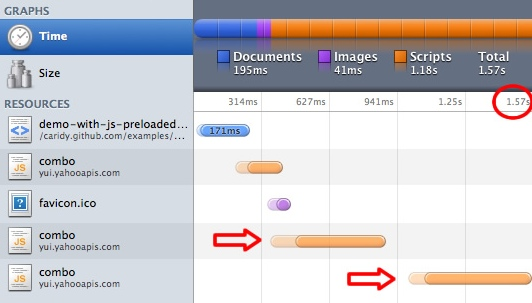
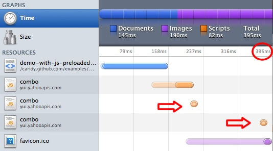

A few weeks ago, Stoyan Stefanov (@stoyanstefanov) published the result of his research about preloading components in advance without executing them. This technique can help improve the performance of the successive pages, if these components can be cached ahead of time.
To leverage these results, we decided to port it into YUI 3 with a new module called "gallery-preload", which is now available through the YUI Loader.
Let’s see a preload example:
YUI({
//Last Gallery Build of this module
gallery: 'gallery-2010.05.05-19-39'
}).use('gallery-preload', function(Y) {
Y.preload ([
'http://tools.w3clubs.com/pagr2/1.sleep.expires.png',
'http://tools.w3clubs.com/pagr2/1.sleep.expires.js',
'http://tools.w3clubs.com/pagr2/1.sleep.expires.css'
]);
});
How does this module improve the user experience?
Nowadays, web applications have a large footprint in terms of Javascript, CSS and Images. Most of these files are static and can be served through a CDN for cacheability. Once any of these files gets downloaded and cached, the browser doesn’t need to download the same file in successive requests for the same page. But still, we have a big impact in the initial page request.
Recent studies suggest that "0.1 second [100ms] is about the limit for having the user feel that the system is reacting instantaneously, more than that will make the user impatient (Jakob Nielsen)". The same stands true for the loading process. If it takes too long, the user will probably close the window. So, we need or make our applications run faster to stay ahead of our user’s expectations.
With web Applications like Facebook or Gmail, the user usually has to log-in first. This is a classic scenario to apply “preloading”. We can estimate that every user will spend between 5 and 10 seconds interacting with a form. During this time, our application is doing nothing. If instead we can use this time to load cacheable files in background, once the user log-in, the browser will not need to re-load some of the scripts that this new page requires, because they were cached in advance. In general, any web application with a form can leverage this technique as 90+% of any form workflow would take the user to a target page.
Some folks have used this technique for a while, but as Stoyan pointed out, it’s hard to do it without executing the scripts, or injecting the CSS, or displaying the images themselves. Also, in most cases, these files will not play nicely with the initial page. So, in order to avoid conflicts, and minimize the time to put a solution in place, we would need to guarantee that these files get included in the cache without using them in the current page.
This process needs to be completely harmless, and even if the user navigates or stops the loading process before the files get downloaded and cached, the fallback is always in place - the second page will try to load the file directly.
Following code shows how to implement this approach:
YUI({
//Last Gallery Build of this module
gallery: 'gallery-2010.05.05-19-39'
}).use('event-focus', 'gallery-preload', function(Y) {
// waiting until the user focuses on an input element to start loading assets
Y.on("focus", function() {
Y.preload ([
'http://tools.w3clubs.com/pagr2/2.sleep.expires.png',
'http://tools.w3clubs.com/pagr2/2.sleep.expires.js',
'http://tools.w3clubs.com/pagr2/2.sleep.expires.css'
]);
}, ".myform input.query");
});
This waits until the user focuses on one of the form input elements to start loading assets that will be used in the form's target page. This will improve the loading time of the page once the user submits the form.
Check the differences between accessing a page directly, and preloading a set of YUI2/YUI3 components ahead of time:


Including few lines of codes to preload these set of components ahead makes this page to load 4 times faster. No changes are required in the logic of your application, and no change in the target page as well. Isn't that amazing?
One more feature:
We also included a more advanced feature for those who want to be less aggressive. The module includes a built-in integration with Nicholas Zakas’ Timer Idle module, allows us to preload files only if the user is inactive for a while. Here is an example:
YUI({
//Last Gallery Build of this module
gallery: 'gallery-2010.05.05-19-39'
}).use('gallery-preload', function(Y) {
// preload files only when the user is idle for at least 100ms
Y.preloadOnIdle ([
'http://tools.w3clubs.com/pagr2/3.sleep.expires.png',
'http://tools.w3clubs.com/pagr2/3.sleep.expires.js',
'http://tools.w3clubs.com/pagr2/3.sleep.expires.css'
], 100);
});
Conclusions:
It's important to be ahead of our users. Knowing the workflow of our web applications, and leveraging this preloading technique will help us improve overall user experience. It's also important to do it without introducing or increasing the complexity of our applications. This new component ("gallery-preload") serves on these ideas, so use it to your benefit.